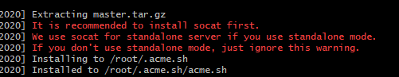
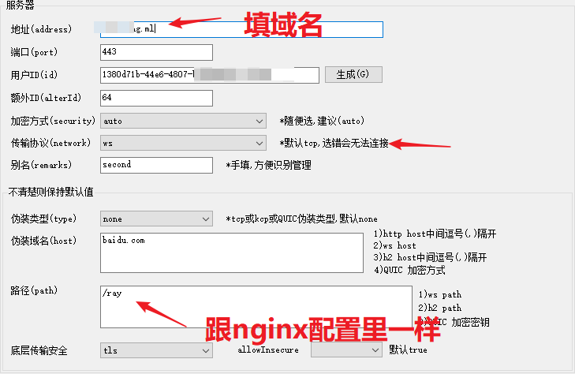

v2ray WebSocket+TLS+Web 实现方法
以前用的都是最基本的配置方法，没有开启 tlc。时不时就断连，作为Google的重度使用者，接受不了，就用WebSocket+TLS+Web结合的方式
建议：用这个方法搭建，你起码要会使用一些基本的Linux 命令，一些常见的报错也要看得懂，不然会很吃力
安装 v2ray
与Shadowsocks 不同，从软件上 V2Ray 不区分服务器版和客户端版，也就是说在服务器和客户端运行的 V2Ray 是同一个软件，区别只是配置文件的不同。
校准时间
对于 V2Ray，它的验证方式包含时间，就算是配置没有任何问题，如果时间不正确，也无法连接 V2Ray 服务器的，服务器会认为你这是不合法的请求。所以系统时间一定要正确，只要保证时间误差在90秒之内就没问题。
查看时间
date -R修改时间，等号后面接要更改的时间
date --set="2017-01-22 16:16:23"有时候VPS的时间是正确的,只是时区不一样,更改时区的方法
依次运行下方的命令,然后重启电脑
[root@linux-node ~]# echo "ZONE=Asia/Shanghai" >> /etc/sysconfig/clock
[root@linux-node ~]# rm -f /etc/localtime
#链接到上海时区文件
[root@linux-node ~]# ln -sf /usr/share/zoneinfo/Asia/Shanghai /etc/localtime
————————————————
原文链接：https://blog.csdn.net/m0_37886429/article/details/78477638下载并安装v2ray
https://github.com/v2fly/fhs-install-v2ray
# curl -O https://raw.githubusercontent.com/v2fly/fhs-install-v2ray/master/install-release.sh
# curl -O https://raw.githubusercontent.com/v2fly/fhs-install-v2ray/master/install-dat-release.sh安裝和更新 V2Ray
# bash install-release.sh
安裝最新發行的 geoip.dat 和 geosite.dat
# bash install-dat-release.sh
移除 V2Ray
# bash install-release.sh --remove让v2ray服务开机自启，关闭SELinux，不然无法enable
sestatus #查看 selinux的状态
setenforce 0 # 临时关闭 selinux
永久关闭,可以修改配置文件/etc/selinux/config,将其中SELINUX设置为disabled
https://blog.csdn.net/edide/article/details/52389946systemctl enable v2ray到这里，V2ray就安装完成了，后面我们开始配置其他东西
注册域名
这一步开开启 TLS
你可以从一些知名的域名服务商那里获取域名，我们使用免费的就可以了
购买域名的方法，请Google
注册好域名之后务必记得添加一个 A 记录 指向你的 VPS的 IP地址! 这一步是在域名服务商的管理后台操作的
证书安装
证书有两种，一种是 ECC 证书（内置公钥是 ECDSA 公钥），一种是 RSA 证书（内置 RSA 公钥）。简单来说，同等长度 ECC 比 RSA 更安全,也就是说在具有同样安全性的情况下，ECC 的密钥长度比 RSA 短得多（加密解密会更快）。但问题是 ECC 的兼容性会差一些，Android 4.x 以下和 Windows XP 不支持。只要您的设备不是非常老的老古董，强烈建议使用 ECC 证书。
获取 acme.sh 脚本
这个是用来帮助你获取 Let’s Encrypt 的免费证书的
下载
curl https://get.acme.sh | sh———————重要————————
过程中如果提示 standalone模式(下图)，请根据提示下载缺失的软件

yum install socat 看到 “Install success!” 代表成功
安装成功后执行 source ~/.bashrc 以确保脚本所设置的命令别名生效。
生成证书
以下命令，请把 mydomain.me 替换成你的域名
以下的命令会临时监听 80 端口，请确保执行该命令前 80 端口没有使用
sudo ~/.acme.sh/acme.sh --issue -d mydomain.me --standalone -k ec-256-k 表示密钥长度，后面的值可以是 ec-256 、ec-384、2048、3072、4096、8192，带有 ec 表示生成的是 ECC 证书，没有则是 RSA 证书。在安全性上 256 位的 ECC 证书等同于 3072 位的 RSA 证书。
更新证书
由于 Let’s Encrypt 的证书有效期只有 3 个月，因此需要 90 天至少要更新一次证书，acme.sh 脚本会每 60 天自动更新证书。也可以手动更新。
手动更新 ECC 证书，执行：
$ sudo ~/.acme.sh/acme.sh --renew -d mydomain.com --force --ecc安装证书
以下命令，请把 mydomain.me 替换成你的域名
将证书和密钥安装到 /etc/v2ray 中：
$ sudo ~/.acme.sh/acme.sh --installcert -d mydomain.me --fullchainpath /etc/v2ray/v2ray.crt --keypath /etc/v2ray/v2ray.key --ecc由于本例中将证书生成到 /etc/v2ray/ 文件夹，更新证书之后还得把新证书生成到 /etc/v2ray
无论什么情况，密钥(即上面的v2ray.key)都不能泄漏，如果你不幸泄漏了密钥，可以使用 acme.sh 将原证书吊销，再生成新的证书，吊销方法请自行参考 acme.sh 的手册
安装nginx
这里我们选择用源码编译的方法来安装
到nginx官网下载
一般选择“nginx-1.17.3”字样就是源码
可以用 wget 命令 下载到 你的vps上，准备编译用
安装编译用的工具
yum -y install gcc gcc-c++ automake pcre pcre-devel zlib zlib-devel open openssl-devel编译nginx
tar xf nginx-1.17.3.tar.gz
cd nginx-1.17.3
./configure --prefix=/usr/local/nginx --with-http_stub_status_module --with-http_ssl_module
configure 一定要指定上面的参数。--prefix 是编译好后nginx安装的位置. http_ssl_module 是 ssl 需要的，切记要加上去.不然，后面又要再编译一次，很麻烦
如果需要重新编译，方法见下面链接
我们继续：
$ make
$ make install 更多关于nginx的信息(重要)
设置nginx开机自启
vi /usr/lib/systemd/system/nginx.service填写如下信息
[Unit]
Description=nginx
After=network.target
[Service]
Type=forking
ExecStart=/usr/local/nginx/sbin/nginx
ExecReload=/usr/local/nginx/sbin/nginx -s reload
ExecStop=/usr/local/nginx/sbin/nginx -s quit
PrivateTmp=true
[Install]
WantedBy=multi-user.target
让nginx开机自动动
systemctl enable nginx.service查看nginx是否启动成功
systemctl status nginx.service更详细的信息，请参考
配置服务器v2ray和nginx
这里，我们只需要更改
/etc/v2ray/config.json 和 /usr/local/nginx/conf/nginx.conf
这两个文件就行
参考下面的教程：
v2ray 配置
将文件所有的内容替换为如下
{
"inbounds": [
{
"port": 10000,
"listen":"127.0.0.1",//只监听 127.0.0.1，避免除本机外的机器探测到开放了 10000 端口
"protocol": "vmess",
"settings": {
"clients": [
{
"id": "b831381d-6324-4d53-ad4f-8cda48b30811", //id更改为自己的
"alterId": 64
}
]
},
"streamSettings": {
"network": "ws",
"wsSettings": {
"path": "/ray"
}
}
}
],
"outbounds": [
{
"protocol": "freedom",
"settings": {}
}
]
}
nginx 配置
将nginx的配置文件里面 原 server 花括号里的内容替换为如下.请注意格式以及内容,不然启动不了nginx的
server {
listen 443 ssl; # 后续如果开了防火墙，记得开放该端口
ssl on;
ssl_certificate /etc/v2ray/v2ray.crt; #这里调用我们TLS那里生成的证书
ssl_certificate_key /etc/v2ray/v2ray.key; #这里调用我们TLS那里生成的证书
ssl_protocols TLSv1 TLSv1.1 TLSv1.2;
ssl_ciphers HIGH:!aNULL:!MD5;
server_name mydomain.me;
location /ray { # 与 V2Ray 配置中的 path 保持一致
proxy_redirect off;
proxy_pass http://127.0.0.1:10000;#假设WebSocket监听在环回地址的10000端口上
proxy_http_version 1.1;
proxy_set_header Upgrade $http_upgrade;
proxy_set_header Connection "upgrade";
proxy_set_header Host $http_host;
proxy_set_header X-Real-IP $remote_addr;
proxy_set_header X-Forwarded-For $proxy_add_x_forwarded_for;
}
}
如果你配置后,实际使用的时候会出现错误。查了资料，别的人也有这个问题
看一下你nginx的配置文件,是不是重复了下面的配置
proxy_set_header Host $http_host;
proxy_set_header Host $host;
這兩個重複了，刪除一個即可正常
客户端
这里，我贴一张我客户端的设置界面

后续服务端更新
找到脚本，然后执行
bash go.sh
Linux 防火墙
注意：部署服务端的时候，请暂时关闭防火墙。部署完后如果开启防火墙，把必须的端口开放
下面时Centos7防火墙的一些基本操作。centos7默认使用firewall-cmd，以前的iptable已经不用了
查看防火墙状态
firewall-cmd --state
停止
systemctl stop firewalld.service
禁止 firewall 开机启动
systemctl disable firewalld.service
查看已经开放的端口
firewall-cmd --list-ports
开启端口
firewall-cmd --zone=public --add-port=80/tcp --permanent
--zone # 作用域
--permanent # 永久生效，没有此参数重启后失效
重启防火墙
firewall-cmd --reload
移除端口
firewall-cmd --remove-port=9998/udp --permanent
来自 https://blog.csdn.net/zj_jim/article/details/53841516
官方教程
道高一尺，魔高一丈。不存在一劳永逸的翻墙方法，最重要的是不断学习提高，搞不好哪天这个教程就失效了呢。祝各位早日看到外面的世界